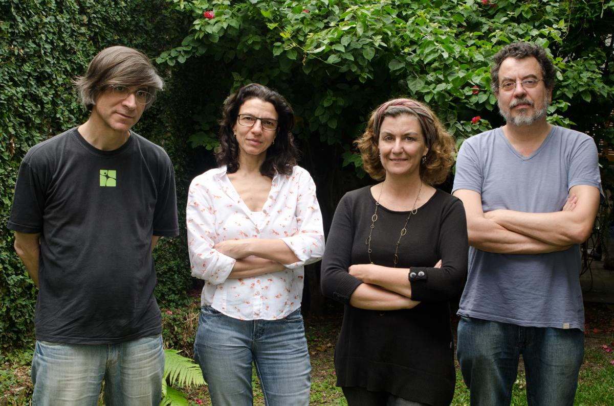
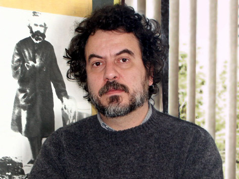

Los socios de la Casa
|  |
(de la izquierda a la derecha)
Giba Assis Brasil, guionista y montador; |
Ana Luiza Azevedo
Directora y guionista. Ha dirigido los cortos DOÑA CRISTINA PERDIÓ LA MEMORIA (2002), TRES MINUTOS (1999) y BARBOSA (1988) y el mediometraje VIENTRE LIVBE (1994). Dirigió programas de televisión para las campañas electorales de 1992 a 2000 del Partido de los Trabajadores. Dirigió varios especiales para la televisión, como DIA DE VISITA (2001) para la Red Globo y EL MEJILLA (2002) para la RBS. Trabaja con cine desde 1984, habiendo sido asistente de dirección de diversas películas, entre los cortos ISLAS DE LAS FLORES (1989), la miniserie LUNA CALIENTE (2000) y los largometrajes TOLERANCIA (2000), EL HOMBRE QUE COPIABA (2003), BIENES CONFISCADOS (2004) y MI TÍO HA MATADO UN TIPO (2005). Actualmente prepara su primer proyecto de largometraje, ANTES QUE EL MUNDO SE ACABE.
• Currículo
• Filmografia en el IMDB
• Foto
• Contacto: anazeved@portoweb.com.br
Giba Assis Brasil
Guionista y montador. Profesor de Cine del curso de Comunicación de la UFRGS desde 1994 y del curso de Realización Audiovisual de la Unisinos desde 2003. Director del largometraje VERDES AÑOS (1984), del largometraje en súper-8 YA BASTA AÑOS 70 (1981) y del cortometraje INTERLUDIO (1983). Guionista de varios cortos y de los largometrajes BÉSAME (1984), EL MENTIROSO (1988) y SÚPER COLOSO (1995), de las miniseries de TV AGOSTO (1993) y LUNA CALIENTE (1998). Montador de los largometrajes TOLERANCIA (2000), HUBO UNA VEZ DOS VERANOS (2002), EL HOMBRE QUE COPIABA (2003), MI TÍO HA MATADO UN TIPO (2005), SAL DE PRATA (2005) y 3 EFES (2007) y de 30 cortos, entre ellos ISLA DE LAS FLORES (1989), ESTA NO ES SU VIDA (1991), DEUS EX-MACHINA (1995) y DOÑA CRISTINA PERDIÓ LA MEMORIA (2002). Actualmente está montando el largometraje ANTES QUE EL MUNDO SE ACABE.
Jorge Furtado
Director y guionista de los largometrajes HUBO UNA VEZ DOS VERANOS (2002), EL HOMBRE QUE COPIABA (2003), MI TÍO HA MATADO UN TIPO (2005) y SANEAMIENTO BÁSICO - LA PELÍCULA (2007), además de varios cortometrajes premiados en Brasil y en el extranjero, como EL DÍA EN QUE DORIVAL ENCARÓ LA GUARDIA (1986), BARBOSA (1988), ISLA DE LAS FLORES (1989), ESTA NO ES SU VIDA (1991), ÁNGELO ANDA DESAPARECIDO (1997) , EL SÁNDWICH (2000) y RUMMIKUB (2007). Guionista y director del episodio CARRETERA, del largometraje FELICIDAD ES... (1995). Para la TV Globo, ha dirigido la serie ESCENA ABIERTA (2003), la miniserie LUNA CALIENTE (1998) y escribió decenas de guiones: AGOSTO (1993), MEMORIAL DE MARIA MOURA (1994), LA INVENCIÓN DE BRASIL (2000), etc., además de la serie COMEDIAS DE LA VIDA PRIVADA, de la cual también dirigió el episodio ANCHIETANOS (1997).
• Currículo
• Filmografia en el IMDB
• Foto
• Contacto: jfurtado@portoweb.com.br
Nora Goulart
Productora ejecutiva de los largometrajes TOLERANCIA (2000), HUBO UNA VEZ DOS VERANOS (2002), EL HOMBRE QUE COPIABA (2003) y MI TÍO HA MATADO UN TIPO (2005), de los cortometrajes como BARBOSA (1988), ISLA DE LAS FLORES (1989), LA MATADORA (1994), UN HOMBRE SERIO (1996), EL SÁNDWICH (2000), y del episodio LA CARRETERA en el largometraje FELICIDAD ES... (1995). Fue Coordinadora de Producción de la RBS Vídeo (de 1989 a 1991) y de la TVC Cine y Televisión, São Paulo (1991). Produjo, para la TV Globo, segmentos de USTED LO DECIDE (1991), DORIS PARA MAYORES (1991-92), el especial EL ALIENISTA (1993), la miniserie LUNA CALIENTE (1998) y episodios de la serie BRAVA GENTE (2000 e 2001), además de la serie ESCENA ABIERTA (2003).
Productora ejecutiva de los programas de TV de las campañas electorales del PT en 1992 a 2000. Actualmente prepara la producción de lo proyecto TRES MUCHACHAS Y UN EXTRATERRESTRE.
• Currículo
• Filmografia en el IMDB
• Foto
• Contacto: nora@casacinepoa.com.br